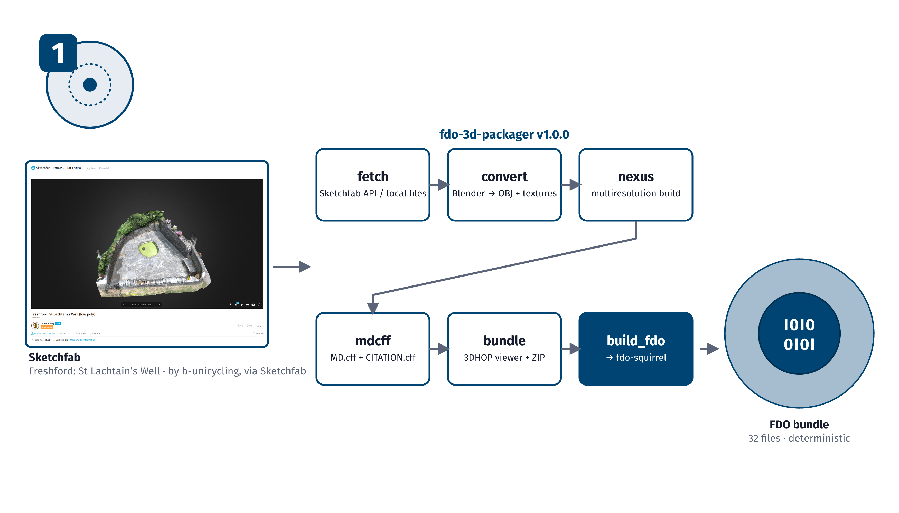
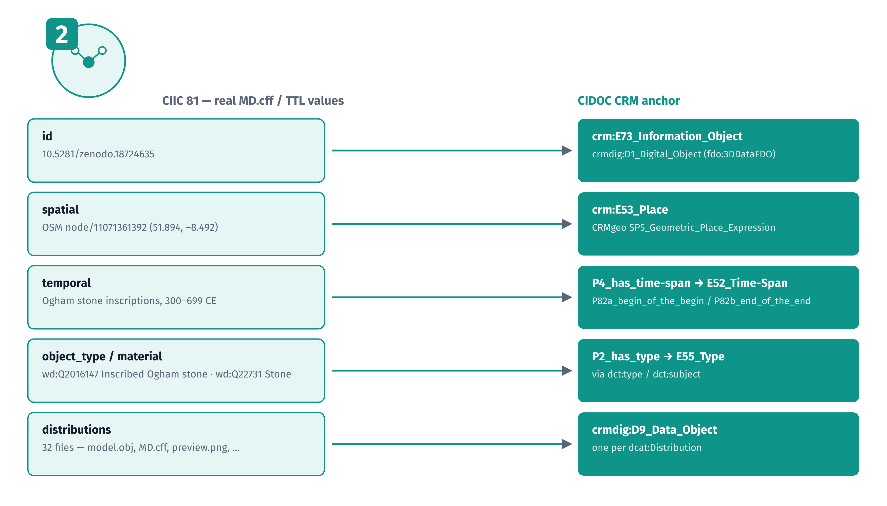
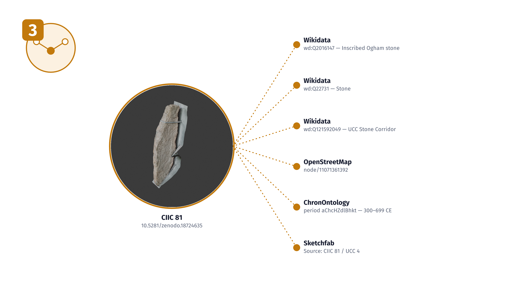
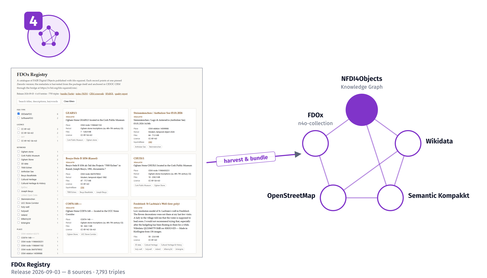

Talk slides: the process
One slide for each of the four steps.

TP.1Talk slide, step 1: FDO encapsulation. A 3D model (Freshford, St Lachtain’s Well, via Sketchfab) is converted and packaged with fdo-3d-packager.
FDOx-squirrel, fdox-visuals (Florian Thiery, LEIZA). Code: MIT licence.



TP.2Talk slide, step 2: semantic metadata and paradata modelling, with the real MD.cff and Turtle values of CIIC 81 and its CIDOC CRM anchor.
FDOx-squirrel, fdox-visuals (Florian Thiery, LEIZA). Code: MIT licence.



TP.3Talk slide, step 3: linking to community hubs. CIIC 81 points to the Wikidata items Q2016147 (Inscribed Ogham stone) and Q22731 (Stone).
FDOx-squirrel, fdox-visuals (Florian Thiery, LEIZA). Code: MIT licence.



TP.4Talk slide, step 4: federated knowledge graph integration. The FDOx registry (release 2026-09-03, 8 sources, 7,793 triples) feeds the NFDI4Objects knowledge graph.
FDOx-squirrel, fdox-visuals (Florian Thiery, LEIZA). Code: MIT licence.